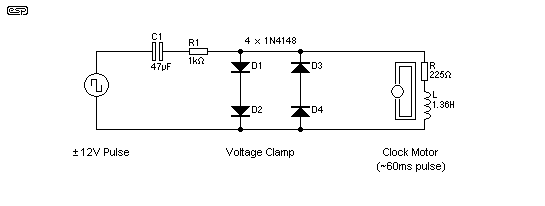
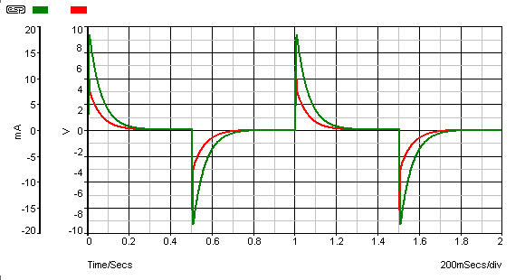
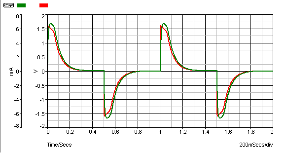
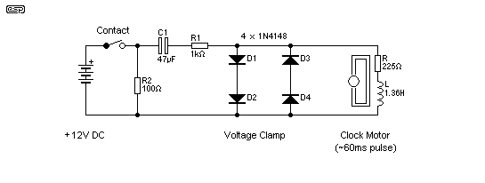

|
|
| Elliott Sound Products | Quartz Motor Drive |
Rod Elliott
Page Created 13 October 2007
There are lots of uses for quartz clock motors once the quartz crystal and divider circuit have been removed. One fairly common requirement is to use the motor system to function as a slave clock from a Synchronome or similar master clock. Unfortunately, the impulses delivered by most of the mechanical contact systems (either existing or fabricated by the enthusiast) are much too great in voltage. Voltages from 6V to 12Vseem common. This high voltage is too great for the motor, and usually causes erratic operation.
One solution is to simply install a capacitor in series, but this is rather hit and miss - where one value of capacitance may work fine (or at least appear to do so), a small variation causes problems again. Including series resistance along with the capacitor may (or may not) help. What is needed is a low impedance circuit that provides close to the optimum ±1.5V impulses, for somewhere between 50 and 100 milliseconds.
Fortunately, this is quite easy to achieve in practice. If we include four small signal diodes (such as 1N914 or 1N4148) across the motor coil, it becomes possible to impulse the motor from almost any voltage imaginable. The diodes act as a clamp, ensuring that the voltage is restricted to no more than about 1.7V - well within the normal tolerance for the motor unit. The general circuit is shown below.

Figure 1 - Quartz Motor Drive Basic Circuit
The circuit shown above should be considered a starting point. Modifications may be needed depending on the characteristics of the motor and the applied voltage. The values shown for the motor equivalent circuit (consisting of resistance and inductance as shown) are typical - expect variations, although they will usually be relatively minor with most quartz motors. The diodes D1-D4 are used as a clamp. Without these, the voltage across the motor coil will reach about 8V, and the coil current peaks at 18mA. This is excessive, and will often cause the motor to misbehave. It may pulse in either direction, or may not move at all. Behaviour will usually be intermittent. The reason is shown in the voltage and current waveforms seen in Figure 2.

Figure 2 - Quartz Motor Waveforms Driven by Capacitor + Resistor Only
You can see in the above that the voltage (red) across the coil reaches 5V, and the peak current (green) is 18mA. There is no well defined pulse of reasonable duration, just a sharp spike in both voltage and current, which rapidly tapers off as the capacitor charges. While some motors will function with this waveform, most that I have tested will not - their operation is at best erratic.
When the clamp circuit is used, the motor coil's peak current is about the same as if it were pulsed from a normal quartz circuit, limited to about 6mA. The voltage is clamped to about 1.6V by the diodes, and the motor will usually perform in a relatively sensible manner.
There will be some motors that will still not work properly, because the driver circuit normally places a short circuit across the coil during the off period. This damps the motor, and prevents possible overshoot. It may also help to reduce mechanical noise because the rotor is stopped quickly rather than being allowed to jiggle around after it is pulsed.

Figure 3 - Quartz Motor Waveforms Driven by Capacitor, Resistor & Clamp
When the clamp circuit is added, the peak voltage is limited to 1.6V, and the current peaks at 6mA. This is almost identical to the normal pulse applied by the quartz clock integrated circuit. The duration is a little longer than normal, but this is unlikely to cause any problems in operation. While not a sharply defined pulse as one will get from the quartz clock IC, it is a perfectly reasonable overall shape, and should drive almost any quartz motor very well.
The current through the capacitor (and from the drive circuit, contacts, etc.) is limited by R1 (1k ohm), and will reach a peak of about 22mA. This is a sufficiently small current as to not cause contact damage. The other advantage of the diode clamps is that when mechanical contacts are used to provide the alternating pulses, there will be no arc as the current is interrupted.
When the current through a coil is stopped by opening a contact, the coil's magnetic field collapses rapidly, causing a high voltage to be generated. This can easily exceed 2-300V, even with only 1.5V as the source. The diodes limit the coil's "back EMF" to about 1.6V of either polarity, so mechanically switched systems will be well protected from the small arc that is generated by the high voltage pulse.
The circuit itself is very simple, and will be easy to build using any technique you may prefer. The 4 diodes are shown as 1N4148 types, but any small signal silicon diode will work just as well. Do not use Schottky or germanium diodes - they must be conventional silicon diodes.
C1 is a non-polarised (bipolar) electrolytic capacitor. These are commonly available almost everywhere, but you may need to use a bipolar capacitor intended for loudspeaker crossover networks if you can't find anything else. Although physically larger, these caps will work just as well. You can use parallel capacitors to get the value needed if 47uF is not available.
If the voltage is less than ±12V, you will need to increase the value of C1 and reduce R1. For example, with a 6V supply, a 100uF cap for C1 will be about right, and R1 will be around 470 ohms. Some experimentation may be needed to get smooth and quiet operation of the motor.
The major benefit of this method is that the capacitor and resistor values are far less critical than would be the case without the clamp.
Please Note: this drive method (like all capacitor drive systems) relies on the voltage being applied continuously, and with reversing polarity. If the contact arrangement is momentary, the circuit will still work, but it will not work if the contact is single polarity, interrupted at suitable intervals. If this is the arrangement used, the contacts should be arranged to short circuit the input of the drive circuit shown when the contacts are at rest.
If it isn't possible to use changeover contacts (because the clock just uses a single normally open contact for example), then you will need to include a resistor from the output to ground. This is shown in Figure 4.

Figure 4 - Drive Arrangement With Single Switch Contact
The additional resistor (R2) should be about half the resistance of the motor coil. The disadvantage of this is that there is a heavier current than normal drawn when the contacts close, and the motor will advance by two seconds in rapid succession (depending on the length of time the switch is closed). The minimum contact closure time is about double the expected pulse width to the quartz motor.
For example, if the motor needs a 60ms pulse to operate properly, the master clock contact needs to remain closed for about 120ms. While the motor might work with shorter contact closure times, it might not. As noted above, the additional resistor imposes a significant current drain, so battery operation isn't really an option if you must use this technique. A small plug-pack (wall-wart) power supply will work fine though, but of course the clock will stop if there is a mains failure. While a backup battery could be included, this becomes difficult to implement if the battery life is to be maximised. Simple charging systems do not maintain the correct voltage and current to keep a battery fully charged. (A battery charger suitable for this use is outside the scope of this article.)
One of the greatest difficulties with Synchronome and similar clocks is obtaining an impulse with minimal pendulum disturbance. Some of the methods that can be used are ...
The best arrangement depends on the available power source and the level of electronics knowledge of the builder. Reed switches are best avoided because of the disturbance to the pendulum's swing. This will reduce the clock's accuracy. Likewise, mechanically activated contacts can impose a significant load to the pendulum, again reducing accuracy (and requiring more pendulum drive power to maintain the swing).
A LED and photo-transistor combination needs special care to exclude ambient light. Infrared LEDs and detectors may be used, but the LED in particular needs a reasonable current (usually about 5-10mA continuously). This rules out battery operation because of current drain and subsequent short battery life. A LED cannot be operated from 1.5V, so a higher voltage than desirable is needed.
The same limitations apply to Hall effect sensors. Most require at least 4V to function, and supply current may be as high as 13mA, depending on the device used.
A coil and magnet is reliable, causes no disturbance, is insensitive to light and needs minimal power. However, there is significant external circuitry needed to obtain a good pulse because the signal level is quite low - especially for a 1 second pendulum. The electrical output of a coil is dependent on the rate of change of the magnetic field, and with a slow-moving pendulum (possibly with a rather short arc), so a good, reliable detection circuit is not easy to with simple circuitry. While it is possible to make an impulse circuit that runs off 1.5V, the end result becomes fairly complex.>/p>